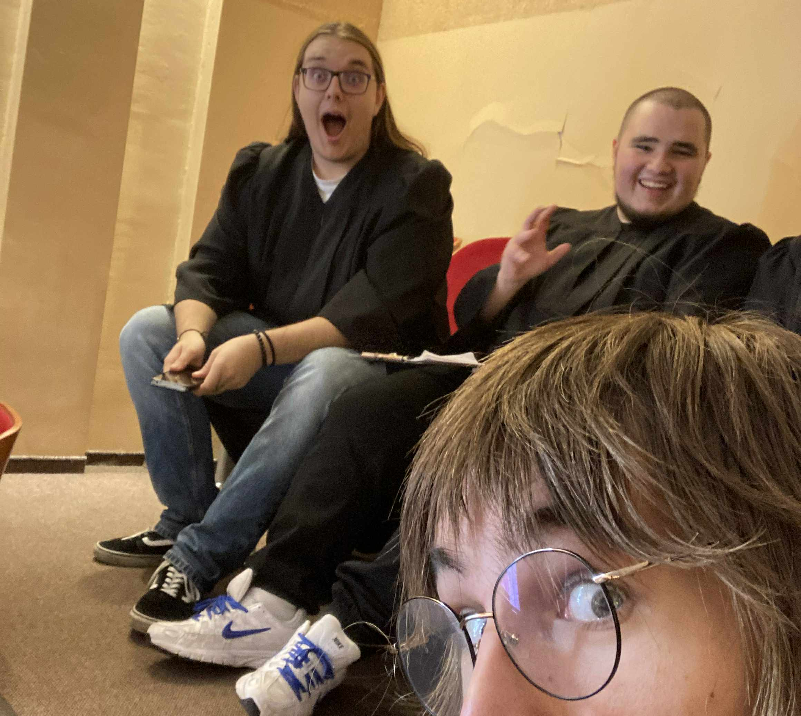
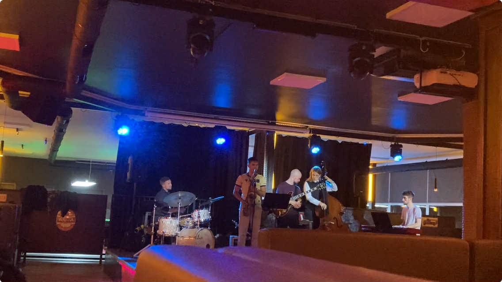

"Będę grał jazz"
Trzy lata temu te słowa wypowiedział Wojtek (aka Courton), gitarzysta Fata Morgany chwilę
przed złamaniem jedynych pałek do perkusji na próbie,
na której mieliśmy nagrać drumsy do "Nikt Nic".
Można uznać to za przedcienienie (ang. foreshadowing), ponieważ studiuję teraz Realizacje Dźwięku na wydziale Jazzu.

Od rozpoczęcia studii minęły już cztery tygodnie i w ciągu tych 28 dni działo sie całkiem sporo. Cały mój wydział (minus instrumentaliści (zazdro)) ma obowiązkowe zajęcia z chóru.
I wszystko byłoby fajnie i w ogóle, gdyby nie fakt, że moja skala głosu jest zbyt wąska na tenora, a do tego mi najbliżej.
Jeżeli kiedykolwiek słuchaliście mojej muzyki, to pewnie
zauważyliście dużą ilość dubli i chórków - jest bardzo spoko technika do dopełnienia wokalu, szczególnie w przypadku, gdy skala wokalisty (np. moja) nie jest jakaś pokaźna.
Niestety jest to fizycznie niemożliwe, żeby mnie sklonować i zrobić dubla na żywo, więc teraz męczę się jako tenor :). Dobra wiadomość jest natomiast taka, że nie idzie mi to tak źle, a kiedy
zapomnę melodii to mogę polegać na Szymonie (Szymon jest zarąbistym tenorem), który za zwyczaj pamięta jak co leci.

Nastroje przed śpiewaniem na inauguracji
roku akademickiego. Na górze z lewej
Szymon (SoTshu) i Oskar (GIT Records)
Ja i SoTshu zrobiliśmy też tracka, którego możecie posłuchać na jego
Newgrounds'ie! Gram tam na basie i jeden z sampli wokali to mój głos.
W każdym razie. Jazz.
Przyznam się od razu, że do tej pory moja styczność z jazzem była raczej sporadyczna. Zazwyczaj były to koncerty, na które zabierał mnie dziadek i płyty, które mi pożyczał. Jednak teraz
jestem na obcym terytorium - jazz jest wszędzie. Każdy instrumentalista na wydziale gra w jakimś stopniu jazz. A ja kocham grać z innymi ludźmi. Więc, żeby grać z innymi tutaj, muszę grać jazz.
I w ten oto sposób ucze się teraz standardów jazzowych. Dla niewtajemniczonych powiem, że standard jazzowy to progresja akordów, na której podstawie odbywają się potem jam sessions (a przynajmniej
ja tak to rozumiem).
W każdym razie znajomość tylko jednego standardu jazzowego nie powstrzymała mnie przed zagraniem na pierwszym jam session w tym roku. WatermelonMan4Ever.

Tak wyglądał ten jam. Na zdjęciu są ludzie z roku wyżej, (grają iście zajebiście).
Dobra, a co się dzieje z Miracle Rats?
W październiku ruszyła sprzedaż płyt CD mojego pierwszego albumu "Oh, Okay" (można je dorwać tutaj).
Jest to dla mnie dosyć duży kamień milowy.
Jakby.
Moja muzyka.
Na fizycznym nośniku.
To niesamowite mieć fizyczną reprezentacje swojej muzyki. Super uczucie, polecam serdecznie.
Kontynuując temat szczurów, jestem w trakcie formowania zespołu do grania nażywo, także wkrótce będzie można przyjść na gigi w okolicy Nysy.
Ale nie można żyć samymi szczurami!
30 października odbyła się premiera "Goose Slippers" Lazy Snails 22 (mojego projektu z Kajetanem, o którym wspomniałam w ostatnim wpisie.)
Jest to bardziej klasyczne podejście do rocka, a sam projekt jest z zamysłu dla samej frajdy i mogę powiedzieć, że nagrywanie tej piosenki było całkiem fajne. Nagraliśmy
perkusje i gitarę rytmiczną na żywo, po czym zrobiliśmy kilka overdubbów z gitarami, basem i wokalami. W porównaniu z moim procesem nagrywania wszystkiego pokolei, nagranie dwóch
instrumentów na raz było niesamowicie przyjemne.
"Goose Slippers" możecie znaleźć na bandcampie i w streamingach.

I to by było na tyle... a nie, zaraz
HALLOWEEN
Orginalnie w tym roku miałam spędzić Halloween siedząc w domu i nic nie robiąc (wiem, nudna opcja). Na szczęście tak się nie stało, a wszystko to
za sprawą wyjazdu do Wrocławia na tydzień przed.
Siedząc u Amelii (a.k.a. melinoë ) i oglądając 1670 dowiedziałam się, że wybiera się ona na imprezę ze znajomymi z wydziału
i że przebiera się za ćmę. Chciała też wziąć ze sobą lampę jako rekwizyt, ale powiedziała też, że nie chciałaby jej wszędzie ze sobą nosić.
I w tym momencie narodził się pomysł kostiumowego matchingu ćmy i lampy. Wychodząc na pociąg zauważyłam klosz od lampy dosłownie przed jej blokiem, więc od razu
zawróciłam do Amelii, żeby ją u niej zostawić. Spóźniłam się przez to na tramwaj, ale i tak im jakoś nie ufam, więc nie była to żadna strata.
Nasze zajefajne kostiumy.
A teraz wyobraźcie sobie taką sytuację: klub z głośną muzyką, masa ludzi w przebraniach, w tym ja, melinoë i świecący klosz na mojej głowie. Jakoś nikt inny nie
miał świecącej czapki, więc jakimś cudem udało mi się wyróżnić się na tle tłumu przebierańców.
Niestety okazuje się, że imprezy klubowe nie są dla mnie. Za dużo ludzi, strasznie głośna muzyka - jeszcze zapomniałam zatyczek do uszu, w których gram koncerty,
także zaliczyłam kolejne stałe uszkodzenie słuchu :').
Nie była to jednak jedyna Halloweenowa impreza! Po powrocie na uczelnię okazało się, że jeszcze tego samego dnia wieczorem odbywa się domówka z obowiązkowymi
przebraniami. A moja zajefajna czapka została w moim domu, 200 kilometrów od Nysy. Także wykombinowałam nowy kostium, tym razem ducha lampki nocnej. W porównaniu z
piątkiem, ta impreza było o wiele lepsza, chyba po prostu wolę domówki.
Duch lampki w akcji.
Także to by było na tyle w tym poście. Dzięki wielkie za przeczytanie i widzimy się ponownie pod koniec listopada.
10 listopada 2025